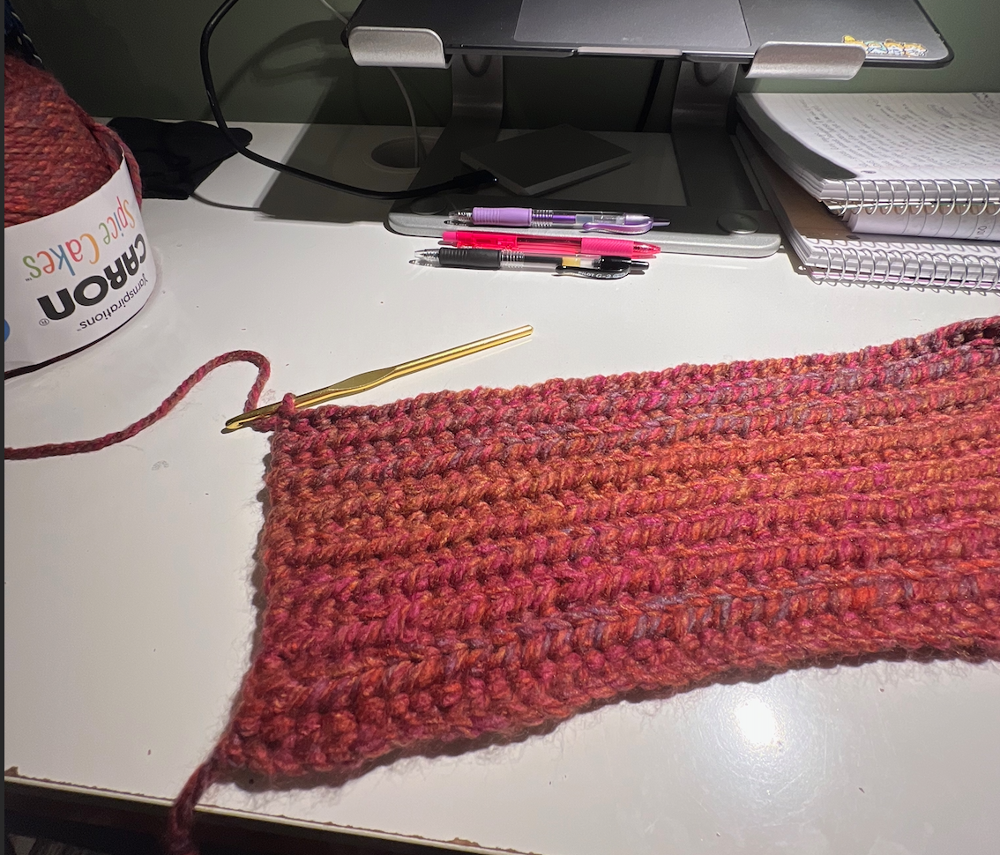

I started my crochet journey on black friday since the yarn was buy
two get one free at Michaels. I was so excited to pick up a new hobby
and crochet a beanie. I also kept misplacing my store bought beanie so this
was a fun way to keep making more.
The beanie came out a bit bigger than expected because I didn't count the loops.
It did not have clean borders like the one in the video but I still enjoyed the process. I
gifted the beanie to my partner.

| Date Started |
Project |
Yarn Color |
| November 25th, 2022 |
Beanie |
Red, Orange, Pink |

My second project included making another beanie but this time for myself.
I wanted to work on making it smaller and with cleaner borders. Previously, my
borders were jagged and curvy. I used the same video as my first project to construct
my beanie.
| Date Started |
Project |
Yarn Color |
| December 20th, 2022 |
Beanie |
White, Gray, Beige |